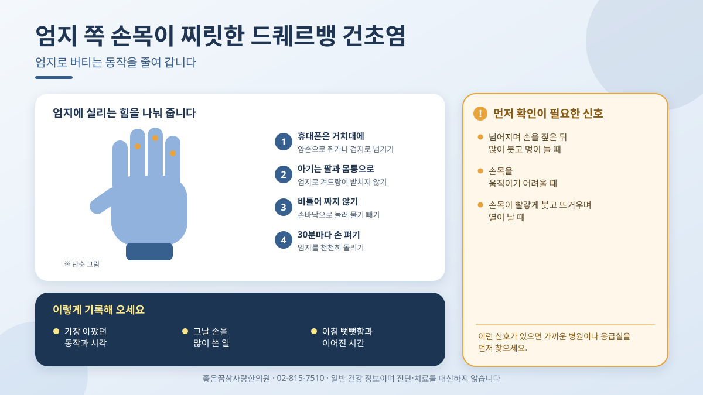

이종호 한의사 감수좋은꿈참사랑한의원 대표원장 (한의사 면허번호 19769)발행 2026-11-26 · 수정 2026-11-26
이 글의 차례
아침에 프라이팬 손잡이를 쥐고 들어 올리는 순간, 손목 엄지 쪽이 찌릿합니다. 아기를 안아 올릴 때, 휴대폰을 한 손으로 쥐고 엄지로 화면을 넘길 때, 행주를 비틀어 짤 때도 같은 자리가 아픕니다. 처음에는 손목을 삐었나 싶었는데 며칠이 지나도 그 자리만 시큰합니다.
이렇게 손목의 엄지 쪽, 손목 주름 바로 위가 아프고 엄지를 움직일 때 통증이 커진다면 드퀘르뱅 건초염을 먼저 떠올려 봅니다. 엄지를 펴고 벌리는 힘줄 두 가닥이 손목 엄지 쪽의 좁은 통로를 지나가는데, 이 통로와 힘줄을 감싼 막이 붓고 두꺼워지면서 움직일 때마다 쓸리고 아픈 상태를 말합니다.
진료실에서는 출산 뒤 아기를 돌보는 엄마, 손주를 봐 주시는 할머니, 하루 종일 필기하는 수험생, 칼과 국자를 쥐고 일하는 분들께서 이 자리를 짚으며 오십니다. 손을 안 쓸 수 없는 생활이라 쉬라는 말이 가장 어렵게 들리는 통증이기도 합니다.
"손목 보호대를 차도 그때뿐이에요." 진료실에서 자주 듣는 말입니다. 손목은 하루에도 수천 번 움직이는 자리라, 아픈 동작을 알아 두고 그 동작을 조금씩 바꾸는 일이 보호대만큼 중요합니다.
왜 엄지 쪽 손목만 이렇게 아플까요
엄지는 다른 손가락과 마주 보며 집고, 쥐고, 비트는 일을 맡습니다. 그래서 엄지를 움직이는 힘줄은 하루 종일 쉬지 않고 일합니다. 그 가운데 엄지를 바깥쪽으로 벌리고 펴는 힘줄 두 가닥이 손목 엄지 쪽 뼈 위의 좁은 터널을 함께 지나갑니다.
이 터널은 원래 넉넉한 곳이 아닙니다. 같은 동작이 반복되면 힘줄을 감싼 막이 붓고 터널 벽이 두꺼워져 길이 더 좁아집니다. 그러면 엄지를 움직일 때마다 힘줄이 좁은 길에서 쓸리고, 쓸릴수록 다시 붓는 고리가 생깁니다.
엄지를 많이 쓰는 생활이 쌓이면 잘 생깁니다. 아기를 안을 때 엄지와 검지 사이를 벌려 아기 겨드랑이를 받치는 자세, 휴대폰을 한 손으로 쥐고 엄지로 넘기는 습관, 손목을 꺾은 채 칼질하는 동작이 대표적입니다.
출산 뒤와 수유하는 시기에도 자주 보입니다. 아기를 안는 횟수가 갑자기 늘고, 몸이 회복되는 시기와 겹치기 때문입니다. 중년 이후에는 손을 쓰는 일이 크게 늘지 않았는데도 생기기도 합니다.
다른 손목 통증과는 어떻게 다를까요
손목이 아프다고 모두 같은 문제는 아닙니다. 아픈 자리와 동작을 나눠 보면 방향이 꽤 달라집니다.
- 드퀘르뱅 건초염: 손목 엄지 쪽 손목 주름 바로 위가 아프고, 엄지를 움직이거나 손목을 새끼손가락 쪽으로 꺾을 때 커집니다.
- 엄지 뿌리 관절염: 손목보다 조금 아래, 엄지가 손바닥과 만나는 마디가 아프고 병뚜껑을 돌리거나 집을 때 시큰합니다.
- 손목터널증후군: 아프다기보다 엄지·검지·중지 끝이 저리고, 새벽에 손이 저려 깨는 일이 많습니다.
- 손목 결절종: 손등이나 손목 안쪽에 말랑한 혹이 만져지고, 혹의 크기가 변하기도 합니다.
- 방아쇠수지: 손가락을 굽혔다 펼 때 딸깍 걸리고, 손바닥 쪽 손가락 뿌리가 아픕니다.
집에서 쉽게 해 보는 방법이 있습니다. 엄지를 손바닥 안쪽으로 접어 넣고 나머지 네 손가락으로 감싸 주먹을 쥔 뒤, 손목을 새끼손가락 쪽으로 천천히 기울여 보세요. 엄지 쪽 손목이 날카롭게 아프면 이 힘줄 쪽을 의심해 볼 수 있습니다.
다만 이 동작은 건강한 손목에서도 당기는 느낌이 들 수 있습니다. 반대쪽 손과 비교해 보시고, 통증이 크면 더 세게 해 보지 말고 그대로 멈추세요. 진단은 진찰과 필요한 검사를 거쳐 정합니다.
이런 장면에서 아픔이 커집니다
같은 손목이라도 하루 중 아픈 순간은 생각보다 뚜렷합니다. 진료실에서 흔히 듣는 장면들을 모아 보면 이렇습니다.
- 아기를 안아 올리거나 내려놓을 때, 겨드랑이를 엄지로 받칠 때
- 행주나 걸레를 비틀어 짤 때, 병뚜껑을 돌릴 때
- 휴대폰을 한 손으로 쥐고 엄지로 화면을 넘길 때
- 무거운 냄비나 프라이팬을 한 손으로 들 때
- 필기구를 오래 꽉 쥐고 쓸 때, 마우스를 엄지로 밀 때
- 머리를 묶거나 단추를 채울 때
이 가운데 매일 피할 수 없는 동작이 무엇인지 함께 찾는 것이 첫걸음입니다. 다 피할 수는 없어도, 순서를 바꾸거나 반대 손과 나누는 것만으로 힘줄이 쉬는 시간이 생깁니다.
쉬라는 말이 어려운 분들께
아기를 키우는 시기의 손목 통증은 특히 마음을 무겁게 합니다. 아파도 아기를 안 안을 수는 없고, 안으면 또 아픕니다. 밤에 수유하다 손목이 찌릿하면 서러운 마음까지 함께 올라옵니다.
그래서 저는 쉬라는 말 대신 "엄지를 쉬게 하는 안는 법"을 같이 찾아보자고 말씀드립니다. 엄지로 겨드랑이를 받치는 대신 팔 전체와 몸통으로 받치고, 아기를 들어 올릴 때는 손바닥 전체로 등을 감싸는 식입니다.
손을 쓰는 일이 생계인 분들도 마찬가지입니다. 일을 줄이기 어렵다면 도구의 손잡이를 굵게 바꾸고, 같은 동작을 오래 이어 하지 않도록 순서를 섞는 방법부터 찾아봅니다. 작은 변화가 쌓이면 힘줄이 숨 쉴 틈이 조금씩 생깁니다.
아침과 저녁, 통증의 얼굴이 다릅니다
이 통증은 하루 중에도 모양이 달라집니다. 아침에 일어나면 손목이 뻣뻣하고 엄지를 처음 움직일 때 뻑뻑하게 걸리는 느낌이 들다가, 몇 분쯤 손을 쓰다 보면 조금 풀립니다.
그런데 하루 종일 손을 쓰고 난 저녁이 되면 다시 욱신거리고, 손목 엄지 쪽이 도톰하게 부어 보이기도 합니다. 설거지를 마치고 나서, 아기를 재우고 나서 통증이 가장 크다고 말씀하시는 분이 많습니다.
이렇게 아침의 뻣뻣함과 저녁의 욱신거림이 함께 있다면, 힘줄을 감싼 막이 붓고 굳은 흐름으로 보고 하루의 손 쓰는 양을 함께 살핍니다. 반대로 밤에 자다가 손끝이 저려 깨는 일이 잦다면 손목터널증후군 쪽도 함께 살펴봐야 합니다.
한쪽이 아프면 다른 쪽도 지칩니다
엄지 쪽 손목이 아프면 자연스럽게 반대 손을 더 쓰게 됩니다. 그러다 몇 주 뒤에는 반대쪽 손목까지 시큰해졌다는 분이 적지 않습니다. 아픈 쪽을 아끼는 만큼 성한 쪽도 쉬는 시간을 주셔야 합니다.
손목을 감싸며 일하다 보면 팔꿈치와 어깨에도 힘이 들어갑니다. 손목을 덜 쓰려고 팔 전체로 물건을 들어 올리다 보니 어깨 앞쪽과 목 뒤가 뻐근해지기도 합니다. 그래서 진료실에서는 손목만 보지 않고 팔 전체의 흐름을 함께 짚어 봅니다.
초음파로는 무엇을 보나요
초음파를 대면 엄지 쪽 손목을 지나는 힘줄 두 가닥과 그 둘레를 단면으로 볼 수 있습니다. 아픈 쪽 힘줄을 감싼 막이 반대쪽보다 두꺼워 보이는지, 둘레에 물이 고여 있는지를 양쪽 손목을 비교하며 살핍니다.
엄지를 움직이며 보면 힘줄이 터널 안에서 매끄럽게 미끄러지는지도 함께 볼 수 있습니다. 다만 초음파로 모든 것을 알 수는 없습니다. 뼈의 문제가 의심되거나 넘어진 뒤라면 엑스레이를, 더 자세한 검사가 필요하면 정형외과 진료를 안내드립니다.
화면을 함께 보며 설명드리면 "이래서 아팠구나" 하고 마음이 조금 놓인다는 분이 많습니다. 내 손목 안에서 무슨 일이 일어나는지 알면, 손을 아끼는 이유도 더 분명해집니다.
먼저 이렇게 여쭙니다
처음 오시면 저는 대략 이런 순서로 여쭙습니다. 생각나는 것부터 말씀해 주셔도 괜찮습니다.
- 가장 아픈 자리를 손가락 하나로 짚어 보실 수 있나요?
- 언제부터 아팠나요? 그 무렵 손을 쓰는 일이 늘었나요?
- 어떤 동작에서 가장 아픈가요? 쉬면 가라앉나요?
- 붓거나 열감이 있나요? 엄지를 움직일 때 뻑뻑하게 걸리는 느낌이 있나요?
- 손가락이 저리거나 감각이 둔한 곳이 있나요?
- 넘어지거나 부딪힌 일이 있었나요? 정형외과 진료나 주사를 받으셨나요?
- 출산, 수유, 갱년기처럼 몸에 큰 변화가 있는 시기인가요?
손목만 보지 않고 목과 어깨, 팔꿈치도 함께 살핍니다. 목과 어깨가 굳으면 팔 전체에 힘이 들어가 손목에 부담이 몰리기 쉽기 때문입니다. 잠과 피로, 붓는 경향도 함께 여쭙습니다.
일상에서 먼저 해 볼 수 있는 것
아래에서 오늘 할 수 있는 것 하나부터 골라 보세요.
- 휴대폰은 양손으로 쥐거나 거치대에 세워 두고 검지로 넘기기
- 아기를 안을 때 엄지로 겨드랑이를 받치지 말고 팔과 몸통으로 받치기
- 행주와 걸레는 비틀어 짜지 말고 손바닥으로 눌러 물기 빼기
- 냄비와 프라이팬은 두 손으로 들고, 무거운 장바구니는 어깨에 메기
- 펜과 칼, 국자처럼 자주 쥐는 도구는 손잡이를 굵게 감기
- 30분마다 손을 펴서 털고, 엄지를 천천히 원을 그리듯 돌리기
아픈 직후 화끈하고 부었다면 차가운 수건을 짧게 대 보세요. 붓기가 가라앉은 뒤 뻣뻣하게 굳는 느낌이 남으면 따뜻한 물에 손을 담가 천천히 펴고 쥐어 보는 것도 좋습니다.
보호대는 엄지까지 감싸는 형태가 이 자리를 쉬게 하는 데 맞습니다. 다만 하루 종일 꽉 조여 두면 오히려 손이 붓고 굳을 수 있어, 아픈 일을 할 때와 잘 때 위주로 쓰고 틈틈이 풀어 주세요.
통증이 있는 쪽 엄지를 세게 늘리거나, 아픈 자리를 손가락으로 세게 문지르는 것은 피해 주세요. 붓기가 있는 힘줄을 더 자극할 수 있습니다.
한의원에서 함께 살필 수 있는 경우
- 손목 엄지 쪽 통증이 몇 주째 이어지며 집안일이나 육아가 버거운 경우
- 정형외과 진료를 받으면서 손 쓰는 습관과 몸 상태를 함께 살피고 싶은 경우
- 출산 뒤 손목과 손가락, 어깨가 함께 뻐근하고 쉽게 붓는 경우
- 목과 어깨가 굳어 팔 전체가 무겁게 느껴지는 경우
좋은꿈참사랑한의원에 처음 오시면 아픈 자리와 동작을 먼저 함께 확인합니다. 그다음 맥을 짚으며 잠과 소화, 붓기, 체온을 여쭙고, 필요하면 초음파로 힘줄 둘레를 살펴봅니다.
침은 진찰을 거쳐 아픈 손목 주변과 팔, 목과 어깨의 굳은 자리를 함께 살펴 정합니다. 손목을 많이 쓰는 생활이라면 진료 사이에 지킬 손 쓰는 법을 한두 가지만 골라 같이 정해 드립니다.
출산 뒤처럼 몸 전체가 지친 시기라면 진찰 뒤 필요할 때 한약을 상의합니다. 수유 중이시면 꼭 알려 주세요. 수유와 함께할 수 있는지 먼저 확인합니다.
정형외과에서 주사나 약 치료를 받고 계셔도 한의원 진료를 함께할 수 있습니다. 받으신 치료와 날짜를 알려 주시면 그 흐름에 맞춰 살핍니다.
다시 오시면 지난번 이후 가장 아팠던 동작이 무엇이었는지, 정해 둔 손 쓰는 법을 지켜 보니 어땠는지부터 여쭙니다. 지키기 어려웠던 것은 더 쉬운 방법으로 바꾸고, 도움이 된 것은 이어 가도록 함께 다듬어 갑니다.
손목 통증은 하루아침에 생긴 것이 아니듯 가라앉는 데에도 시간이 걸립니다. 그 사이 조급한 마음이 들 때면 진료실에서 편하게 말씀해 주세요. 지금 어디쯤 와 있는지 같이 짚어 보겠습니다.
이렇게 기록해 오시면 상담이 쉬워집니다
손목 통증은 하루에도 오르내림이 커서, 진료실에 오는 날에는 덜 아픈 경우도 많습니다. 일주일만 적어 보세요.
- 가장 아팠던 동작과 그때의 시각
- 아기 안기, 필기, 요리처럼 그날 손을 많이 쓴 일과 시간
- 아침에 일어났을 때 뻣뻣함이 있었는지, 몇 분쯤 갔는지
- 붓기나 열감이 있었는지, 차갑게 또는 따뜻하게 했을 때 어땠는지
- 보호대를 언제 얼마나 했는지
사진 한 장도 도움이 됩니다. 부었을 때 양쪽 손목을 나란히 놓고 찍어 두시면 진료실에서 비교하기 좋습니다.
이런 증상은 먼저 확인이 필요합니다
- 넘어지며 손을 짚은 뒤 손목이 많이 붓고 멍이 들거나 움직이기 어려운 경우
- 손목이 빨갛게 붓고 뜨거우면서 열이 나는 경우
이런 신호가 있으면 한의원보다 가까운 병원이나 응급실을 먼저 찾으세요.
손을 쓰지 않고 살 수는 없기에, 손목 통증은 하루하루를 조금씩 지치게 합니다. 엄지 하나 편하게 쓰는 일이 이렇게 소중한 줄 아프고 나서야 알게 됩니다. 어떤 동작에서 가장 아픈지부터 차근차근 같이 찾아보겠습니다.
함께 읽으면 좋은 글
- 엄지 쪽 손목이 아파 휴대폰 쥐기도 불편할 때는 어떻게 살피나요?
- 새벽에 손이 저려 깨는 손목터널증후군은 어떻게 살피나요?
- 손가락을 굽혔다 펼 때 딸깍 걸리는 방아쇠수지는 어떻게 살피나요?
- 아기를 안고 달래느라 손목과 어깨가 아픈 부모는 자세를 어떻게 점검하나요?
- 필기를 많이 하는 수험생의 손목과 엄지가 시큰할 때는 어떻게 하나요?

여쭙는 것
- 가장 아픈 자리를 손가락 하나로 짚어 보실 수 있나요?
- 언제부터 아팠나요? 그 무렵 손을 쓰는 일이 늘었나요?
- 어떤 동작에서 가장 아픈가요? 쉬면 가라앉나요?
생활에서 해 볼 것
- 휴대폰은 양손으로 쥐거나 거치대에 세워 두고 검지로 넘기기
- 아기를 안을 때 엄지로 겨드랑이를 받치지 말고 팔과 몸통으로 받치기
- 행주와 걸레는 비틀어 짜지 말고 손바닥으로 눌러 물기 빼기
한의원에서 함께 살필 것
- 손목 엄지 쪽 통증이 몇 주째 이어지며 집안일이나 육아가 버거운 경우
- 정형외과 진료를 받으면서 손 쓰는 습관과 몸 상태를 함께 살피고 싶은 경우
- 출산 뒤 손목과 손가락, 어깨가 함께 뻐근하고 쉽게 붓는 경우
먼저 확인이 필요한 신호
- 넘어지며 손을 짚은 뒤 손목이 많이 붓고 멍이 들거나 움직이기 어려운 경우
- 손목이 빨갛게 붓고 뜨거우면서 열이 나는 경우
한눈에 보는 표
| 구분 | 핵심 |
|---|---|
| 여쭙는 것 | 가장 아픈 자리를 손가락 하나로 짚어 보실 수 있나요? 언제부터 아팠나요? 그 무렵 손을 쓰는 일이 늘었나요? |
| 생활에서 해 볼 것 | 휴대폰은 양손으로 쥐거나 거치대에 세워 두고 검지로 넘기기 아기를 안을 때 엄지로 겨드랑이를 받치지 말고 팔과 몸통으로 받치기 |
| 한의원에서 함께 살필 것 | 손목 엄지 쪽 통증이 몇 주째 이어지며 집안일이나 육아가 버거운 경우 정형외과 진료를 받으면서 손 쓰는 습관과 몸 상태를 함께 살피고 싶은 경우 |
| 먼저 확인이 필요한 신호 | 넘어지며 손을 짚은 뒤 손목이 많이 붓고 멍이 들거나 움직이기 어려운 경우 손목이 빨갛게 붓고 뜨거우면서 열이 나는 경우 |
자주 묻는 질문
드퀘르뱅 건초염은 손목을 삔 것과 어떻게 다른가요?
삔 것은 대개 넘어지거나 꺾인 순간이 분명하고 그 뒤로 붓고 아픕니다. 드퀘르뱅 건초염은 뚜렷한 계기 없이 엄지를 쓰는 동작이 쌓이면서 서서히 아파지는 경우가 많습니다. 넘어진 뒤라면 엑스레이 확인을 먼저 권합니다.
보호대는 하루 종일 차고 있어야 하나요?
엄지까지 감싸는 보호대는 아픈 일을 할 때와 잘 때 위주로 쓰고 틈틈이 풀어 주는 것을 권합니다. 계속 꽉 조여 두면 손이 붓거나 굳을 수 있습니다.
수유 중인데 한의원 진료를 받아도 되나요?
수유 중이라는 것을 먼저 알려 주시면 그에 맞춰 진찰하고 침과 한약을 상의합니다. 한약은 수유와 함께할 수 있는지 확인한 뒤에 정합니다.
정형외과에서 주사를 맞았는데 침을 같이 맞아도 되나요?
주사를 맞은 날짜와 자리를 알려 주시면 그것을 확인하고 진찰을 거쳐 정합니다. 두 진료를 함께 받는 분도 많습니다.
휴대폰을 쓰지 말아야 하나요?
쓰지 않기는 어렵습니다. 양손으로 쥐거나 거치대에 세워 두고 검지로 넘기는 것만으로도 엄지의 부담을 줄이는 데 도움이 될 수 있습니다.
좋은꿈참사랑한의원은 재진 때 지난번 이야기부터 이어서 여쭙니다. 진료시간과 예약은 오시는 길에서 확인하세요.
어디서 상담받을 수 있나요?
좋은꿈참사랑한의원은 서울 동작구 만양로2길 2 신성빌딩 3층·5층(서울 동작구 상도동, 7호선 상도역 3번 출구 근처)에 있습니다. 한의사 3명(이종호 대표원장, 조영기 수석진료원장, 정원영 진료원장)이 진료합니다. 진료시간은 평일 09:30~20:00(점심 13:00~14:00), 토·일·공휴일 09:30~15:00이며, 방문 전 전화로 확인을 권합니다. 예약은 네이버 예약, 카카오톡 상담, 전화 02-815-7510로 받습니다.
이 글은 일반적인 건강 정보이며 개인의 진단이나 치료를 대신하지 않습니다. 증상이 있거나 복용 중인 약이 있다면 진료를 통해 확인하세요. 치료 효과는 개인마다 다를 수 있습니다.
작성 기준: 일반적으로 알려져 있는 건강 정보를 참고해 정리했습니다(대표원장 감수). 증상 기록은 1~2주 동안 하루 1회, 비슷한 시간에 적어 오시면 지난 상태와 비교하기 쉽습니다.